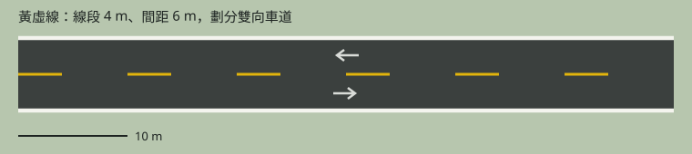

行車分向線 第181條
劃分雙向車道，指示車輛靠右分向行駛。

規格
| 類別 | 指示標線 |
|---|---|
| 顏色 | 黃 |
| 線型 | 虛線 |
| 尺寸 | 黃虛線，線段 4 公尺、間距 6 公尺，線寬 10 公分。 |
意義
劃分雙向車道，指示車輛靠右分向行駛。
設置地點
路面寬 6 公尺以上的路段；路面寬 5 至 6 公尺且符合凸形豎曲線、平曲線或年平均日交通量 400 輛以上等條件者亦得設置。
跨越或通行
以虛線表示分向；可否超車另依禁止超車線（第166條）與道路交通安全規則。（整理說明）
常見誤解
- 行車分向線是黃虛線，分向限制線（第165條）才是雙黃實線，兩者名稱只差兩個字。
出處
道路交通標誌標線號誌設置規則（民國115年03月11日修正）第181條。全國法規資料庫原文
本頁為條文整理，用字以原文為準；標「整理說明」者為本站補充。最後更新：2026-11-13